Creador de un show mas: James Garland "J.G." Quintel
"J. G. Quintel"
James Garland "J.G." Quintel (Hanford, California; 13 de septiembre de 1982) es un animador, actor de voz, director, guionista, dibujante y productor estadounidense. Es más conocido por ser el creador y el director creativo de la serie animada Regular Show, Close Enough y también lo fue de Las maravillosas desventuras de Flapjack, que estuvo en pantalla con episodios originales desde junio de 2008 y hasta agosto de 2010.
informacion personal
| Nombre de nacimiento |
James Garland Quintel |
| Nacimiento |
13 de septiembre de 1982 (41 años)Hanford (California) |
| Nacionalidad |
Estadounidense |
| Religión |
Cristianismo |
| Lengua nativas |
Ingles |
Familia
| Cónyuge |
Cassia Streb (2010-presente) |
| Hijos |
Lynn Streb Quintel |
| Familiares |
Payton Dean Quintel (hermano menor) |
Educación
| Instituto |
Distrito Escolar Unificado de Hanford |
| Educado en |
Instituto de las Artes de California College of the Sequoias |
Información profesional
| Ocupación |
Productor ejecutivo, dibujante, guionista, animador de dibujos animados y actor de voz. |
| Años activo |
2004-presente |
| Obras notables |
Regular Show |
Carrera
"J.G." Quintel se graduó de Hanford High en junio del 2000, para luego ir a estudiar al California Institute of the Arts ubicado en Valencia, California, donde Quintel comenzó su carrera en la animación profesional, realizando animaciones con sus amigos con base en nombres al azar que ponían dentro de un sombrero, luego sacaban y sobre esa palabra dibujaban.1
Igualmente, su primer trabajo real en el mundo de la animación fue cuando en el año 2004 logró un trabajo como interino en Cartoon Network para trabajar en la serie Star Wars: La guerra de los clones.
En 2008, Quintel lanzó Regular Show del proyecto Cartoonstitute del Cartoon Network de Estados Unidos, utilizando un guion gráfico con su razonamiento, Quintel comentó "me creo verbalmente lanzando un concepto tan extraño que para nadie habría tenido algún sentido."
A partir de allí comenzó a hacer carrera dentro del canal, trabajando primero en la serie "Las maravillosas desventuras de Flapjack" y luego presentando el proyecto de Un show más, al que se le dio luz verde en el año 2009.
En marzo de 2012, Quintel siguió trabajando en Cartoon Network con un equipo de 35 animadores en la serie Regular Show, donde además participa como actor de voz para el personaje Mordecai, serie que en 2012 ganó un premio Emmy.
Comentando sobre su trabajo también como voz de Mordecai en la versión estadounidense, Quintel observó que tiene un carácter fácil de llevar y no grita nunca en la vida real, por lo que tuvo que aprender a gritar como el personaje.
Vida personal
Sus padres son James Allen Quintel y Terri Quintel (de apellido de soltera Morris). Tiene un hermano menor llamado Payton Dean Quintel.
Está casado con la violinista Cassia Streb desde 2010, y juntos tienen una hija llamada Lynn Streb Quintel, nacida en 2012.
Durante un tiempo circuló el rumor de que Quintel y Janie Haddad (la voz de Margaret en Regular Show) estaban casados, lo que es totalmente falso, ya que Quintel está casado con Cassia Streb y Haddad con el actor Paul F. Tompkins.
Filmografía
Cine
Televisión
| Año |
Título |
Papel |
Notas |
| 2003 - 2005 |
Star Wars: Clone Wars |
Artista de guion gráfico y revisionista. |
|
| 2006 - 2007 |
El Campamento de Lazlo |
Artista de guion gráfico, director, escritor y revisionista. |
|
| 2008 - 2015 |
Phineas y Ferb |
Escritor y artista de guion gráfico. |
Episodio: "Jerk De Soleil". |
| 2008 - 2010 |
Las maravillosas desventuras de Flapjack |
Director creativo y artista de guion gráfico. |
|
| 2010 - 2018 |
Hora de Aventura |
Escritor y artista de guion gráfico. |
Episodio: "Ocean of Fear". |
| 2010 - 2017 |
Regular Show |
Creador, productor ejecutivo, escritor y actor de voz. |
|
| 2012 - 2013 |
MAD |
Actor de voz. |
|
| 2020 |
Close Enough |
Creador, productor ejecutivo, escritor y actor de voz. |
|
Cortometraje
| Año |
Título |
Papel |
| 2005 |
The Naive Man from Lolliland. |
Creador. |
| 2006 |
2 in the AM PM. |
Creador y actor de voz. |
Premios y nominaciones
| Año |
Categoría |
Trabajo Nominado |
Resultado |
| 2011 |
Mejor episodio corto en una serie de animación |
Regular Show: Mordecai y los Rigbys |
Nominado |
| 2012 |
Mejor episodio corto en una serie de animación |
Regular Show: Extrahuevordinario |
Ganador |
| 2013 |
Mejor episodio corto en una serie de animación |
Regular Show: Un Grupo de Gansos Adultos |
Nominado |
| 2013 |
Mejor episodio en una serie animada |
Regular Show: El Especial de Navidad |
Nominado |
| 2014 |
Mejor episodio corto en una serie de animación |
Regular Show: El Último Reproductor de LaserDisc |
Nominado |
| Año |
Categoría |
Trabajo Nominado |
Resultado |
| 2010 |
Mejor dirección en un producto televisivo animado |
Las maravillosas desventuras de Flapjack: Candy Casanova |
Nominado |
Influencias
En su adolescencia, a Quintel le encantaba dibujar y ver dibujos animados como Los Simpsons, Beavis y Butt-Head y El show de Moxy, así como programas británicos como The League of Gentlemen y The Mighty Boosh. Jugaba a menudo el videojuego ToeJam & Earl y Quintel describió a este juego como "la plataforma perfecta para Mordecai y Rigby", personajes de Regular Show. Quintel también llegó a ser influenciado por la música de la década de 1980, y más tarde empezaría a añadir la música de los años ochenta a Regular Show.

 


 
